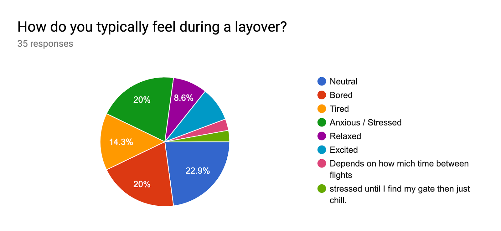
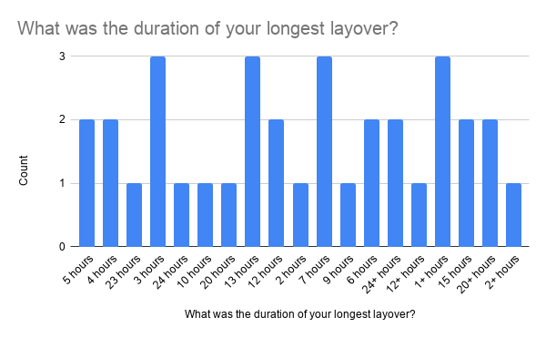
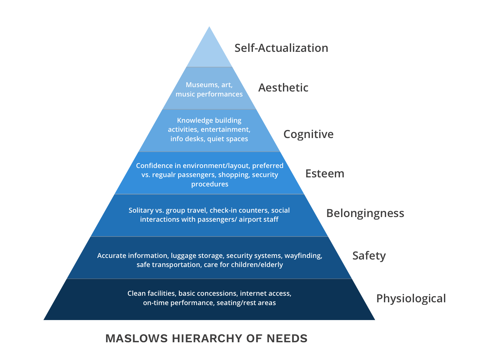
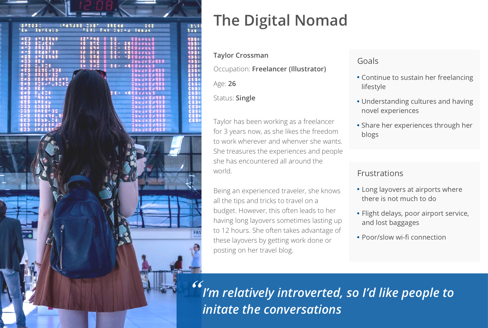
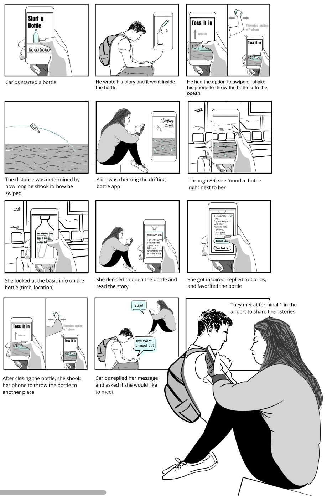
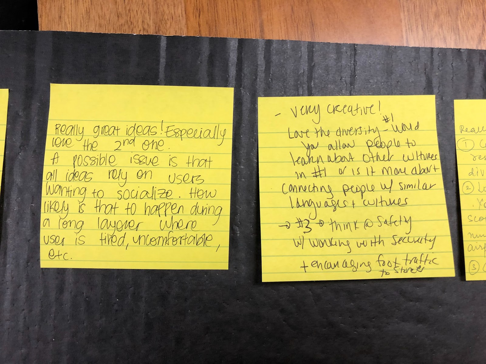
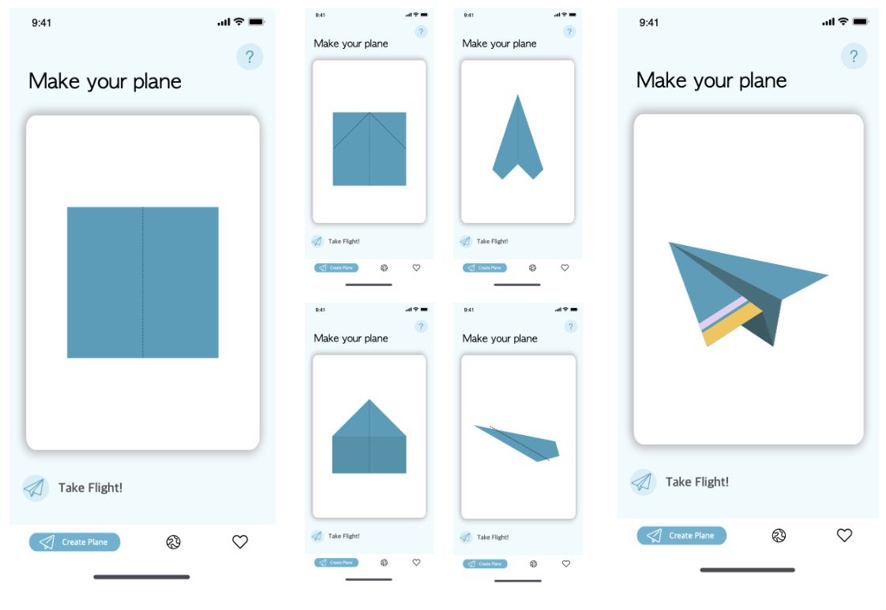
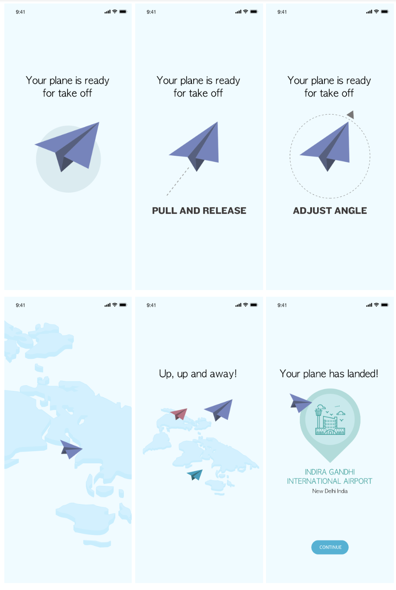
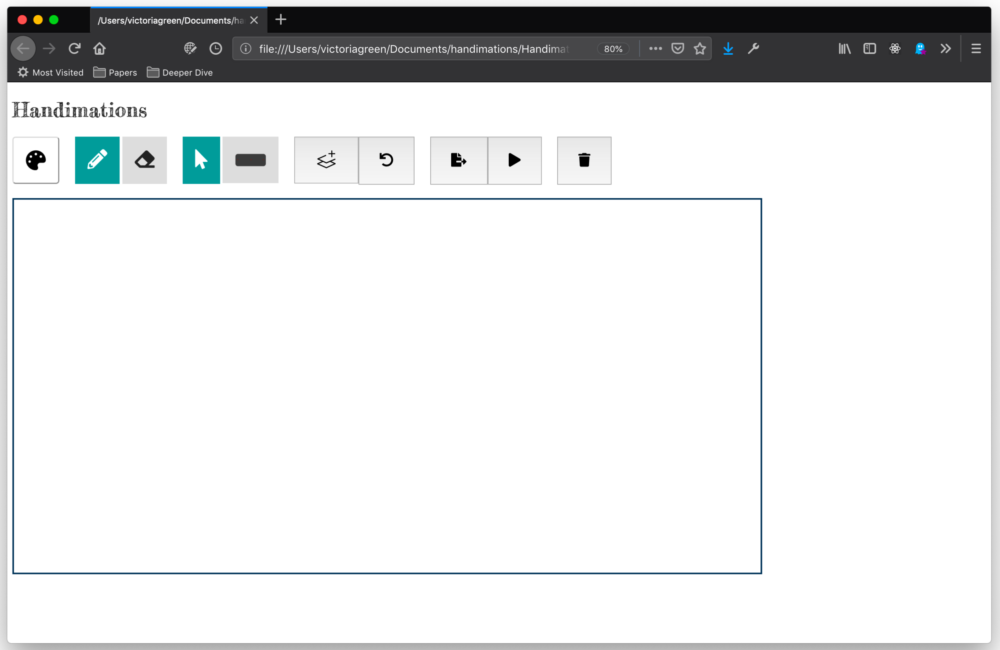
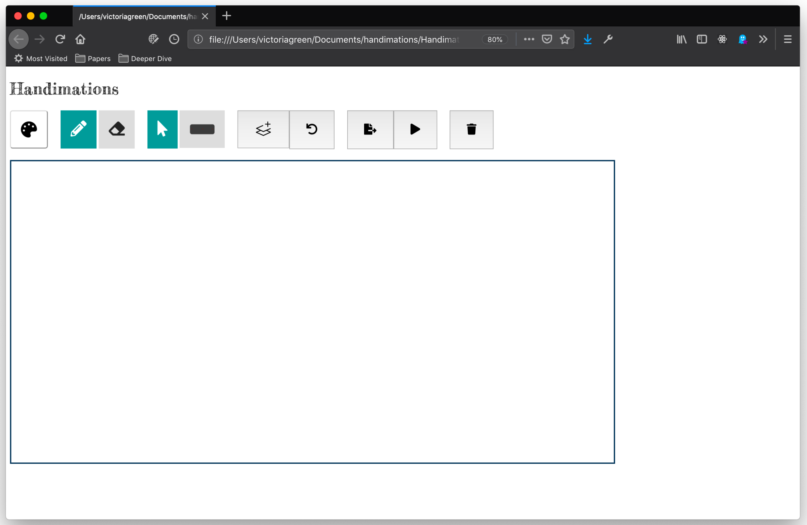

×
Paper Planes
Description
A system that aims to connect travelers from all walks of life. Creating a living and growing community interlinked through the stories they choose to share.
Overview
Duration: 3 Months
Collaboration: Team of 5
Role: Visual Designer, UX Designer
Tools: Affinity Designer (Illustrator), Figma, Miro
Process
View an In-depth Presentation Here
- Exploring the Problem Space
- The majority of responses to our survey and semi-structured interviews outline that the reasons for selecting a long layover are to save money (the price of a flight with a layover is usually cheaper), or that there are no direct
flights available to their destination.
- In our interviews we found that many travelers like to talk to strangers, explore the airport, and sleep, not with the intention of meeting new people, satisfying curiosity, or recovering energy, but to find ways to spend their time
productively.



- Brainstorming Solutions
- We have defined ‘young solo travelers’ as our primary user group. The key characteristics of this group is that they are often traveling alone, usually on a budget, and particularly open to knowledge or cultural exchanges.

- How might we...
- help people make connections at the airport?
- promote social interactions during the entire layover journey?
- leverage existing social networks to create more networks?
- create an airport community of travelers across the globe?
- we used affinity mapping to group ideas and themes together to figure out potential directions of our solution

- we then created storyboards for our 3 very different solutions. One highlighted below:

- We put our design alternatives into a poster for the poster session where we got invaluable feedback from our peers and instructors.

- Evaluation and Protoyping
- We used the feedback from the poster session to decide which direction to go in and make some improvements.

- We then planned out the prototype, usability critera, and evaluation plan.
- Discount Evaluation
- focus group
- expert review
- participatorydesign

Outcome
Find the poster we created here. See Screenshots below




 
